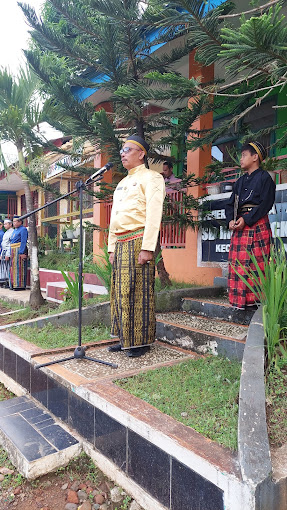
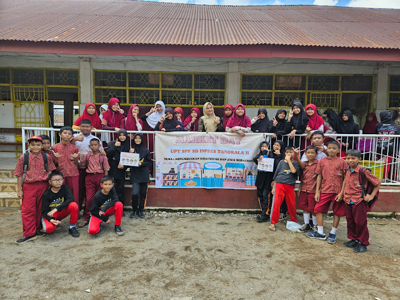
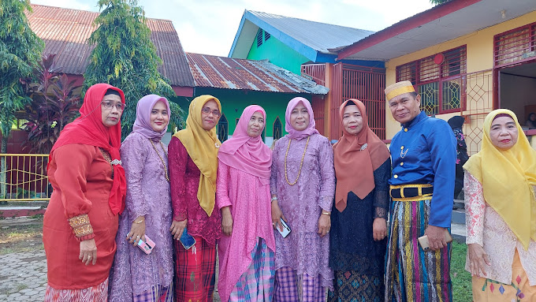

Selamat Datang di SD INPRES TANGKALA II
Sekolah Dasar Negeri dengan Akreditasi A di Sudiang Raya, Makassar. Membentuk generasi cerdas, berakhlak mulia, dan berprestasi.
SelengkapnyaPendidikan Berkualitas
Dengan tenaga pengajar profesional dan fasilitas modern, kami berkomitmen memberikan pendidikan terbaik untuk anak-anak Indonesia.
SelengkapnyaAkreditasi A
Sekolah dengan standar pendidikan nasional yang telah terakreditasi A. Bersama kami, wujudkan masa depan gemilang putra-putri Anda.
Selengkapnya
Profil Sekolah
Berdiri 2016
Tentang Kami
UPT SPF SD INPRES TANGKALA II adalah Sekolah Dasar Negeri yang berlokasi di Sudiang Raya, Kecamatan Biringkanaya, Kota Makassar, Sulawesi Selatan. Didirikan berdasarkan SK Pendirian No. 421.2/5764/DP/IX/2016 pada tanggal 16 September 2016.
- Akreditasi A - Standar Pendidikan Nasional
- Tenaga Pengajar Profesional dan Berpengalaman
- Fasilitas Lengkap dengan Akses Internet 50 Mb
Kami berkomitmen untuk membentuk generasi yang cerdas, berakhlak mulia, dan siap menghadapi tantangan masa depan melalui pendidikan berkualitas.
Keunggulan
Mengapa memilih SD INPRES TANGKALA II untuk pendidikan putra-putri Anda
Tenaga Pengajar Profesional
Guru-guru berpengalaman dan berkompeten yang siap membimbing siswa dengan penuh dedikasi
Fasilitas Modern & Lengkap
Ruang kelas nyaman, perpustakaan, laboratorium komputer, dan akses internet berkecepatan tinggi
Akreditasi A
Terakreditasi A dengan standar pendidikan nasional yang terjamin kualitasnya
Pendidikan Karakter
Membentuk siswa yang tidak hanya cerdas, tetapi juga berakhlak mulia dan berkarakter kuat
Program Pendidikan
Program-program unggulan yang kami tawarkan untuk mengembangkan potensi siswa
Literasi & Numerasi
Program penguatan kemampuan membaca, menulis, dan berhitung sebagai fondasi pembelajaran siswa
Seni & Kreativitas
Mengembangkan bakat seni siswa melalui musik, tari, dan seni rupa untuk mengasah kreativitas
Olahraga & Kesehatan
Pembinaan olahraga dan pendidikan jasmani untuk membentuk siswa yang sehat dan berprestasi
Teknologi & Komputer
Pengenalan teknologi informasi dan komputer untuk mempersiapkan siswa di era digital
Ekstrakurikuler
Berbagai kegiatan ekstrakurikuler seperti pramuka, drumband, dan kegiatan lainnya untuk mengembangkan minat dan bakat
Pendaftaran Siswa Baru
Daftarkan putra-putri Anda di SD INPRES TANGKALA II untuk mendapatkan pendidikan berkualitas dengan akreditasi A. Kami siap membimbing anak Anda menjadi generasi yang cerdas dan berakhlak mulia.
Hubungi KamiPertanyaan yang Sering Diajukan
Temukan jawaban untuk pertanyaan umum tentang SD INPRES TANGKALA II
Bagaimana cara mendaftar di SD INPRES TANGKALA II?
Pendaftaran dapat dilakukan dengan mengunjungi sekolah secara langsung atau menghubungi kami melalui telepon di 04114812711. Anda juga bisa mengirim email ke jusma_sd_tangkala2@yahoo.com untuk informasi lebih lanjut.
Apa saja persyaratan untuk masuk SD INPRES TANGKALA II?
Persyaratan umum meliputi: fotokopi akta kelahiran, fotokopi kartu keluarga, pas foto terbaru, dan surat keterangan sehat dari dokter. Untuk informasi detail persyaratan, silakan hubungi pihak sekolah.
Apa saja fasilitas yang tersedia di sekolah?
SD INPRES TANGKALA II dilengkapi dengan ruang kelas yang nyaman, perpustakaan, laboratorium komputer, lapangan olahraga, dan akses internet berkecepatan 50 Mb untuk mendukung pembelajaran modern.
Apakah ada program ekstrakurikuler?
Ya, kami menyediakan berbagai kegiatan ekstrakurikuler seperti pramuka, drumband, seni tari, olahraga, dan kegiatan lainnya untuk mengembangkan minat dan bakat siswa di luar jam pelajaran.
Bagaimana sistem pembelajaran di SD INPRES TANGKALA II?
Kami menerapkan kurikulum nasional dengan metode pembelajaran yang interaktif dan menyenangkan. Siswa dibimbing oleh guru-guru profesional dengan pendekatan yang mengutamakan pemahaman konsep dan pengembangan karakter.
Apakah tersedia program beasiswa?
Untuk informasi mengenai program beasiswa dan bantuan pendidikan, silakan menghubungi pihak sekolah secara langsung. Kami akan dengan senang hati memberikan informasi detail mengenai program bantuan yang tersedia.
Guru & Staff
Tim pengajar profesional yang berdedikasi untuk pendidikan putra-putri Anda

Drs. Ahmad Suryadi, M.Pd
Kepala SekolahMemimpin dengan visi untuk mencetak generasi yang cerdas, berakhlak mulia, dan siap menghadapi tantangan masa depan

Siti Nurhaliza, S.Pd
Guru KelasBerpengalaman dalam membimbing siswa dengan pendekatan yang kreatif dan menyenangkan

Budi Santoso, S.Kom
Guru KomputerMengajarkan teknologi informasi dengan metode yang mudah dipahami untuk mempersiapkan siswa di era digital
Galeri
Dokumentasi kegiatan dan fasilitas SD INPRES TANGKALA II


Kontak Kami
Hubungi kami untuk informasi lebih lanjut tentang pendaftaran dan program sekolah
Alamat
Sudiang Raya, Kec. Biringkanaya, Kota Makassar, Sulawesi Selatan
Telepon
04114812711
sd_tangkala2@yahoo.com